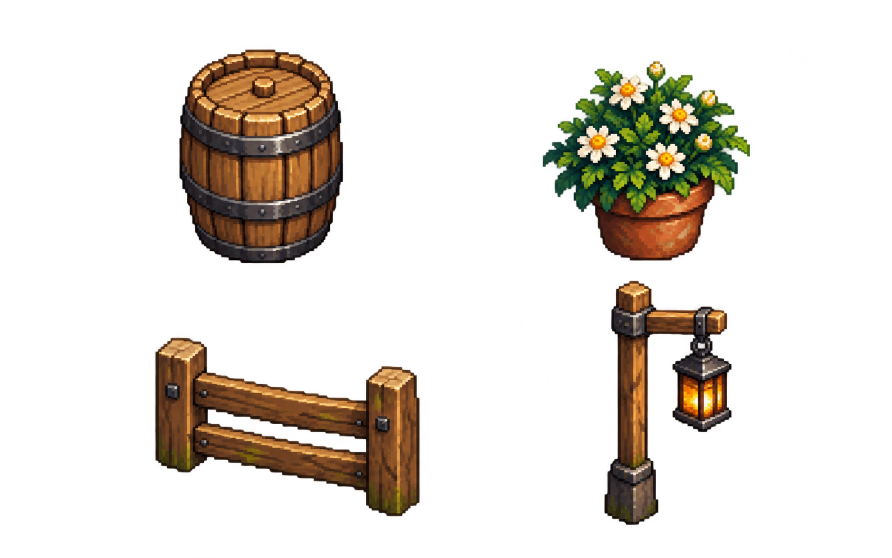

Sân nhà Bình Minh · Bộ vật thể r023
Bốn loại vật thể mới theo r009, thử cùng bộ nhà r021 và actor40px. Khung dưới là bàn bố trí riêng, không thay cảnh chính. Chưa collider hoặc tương tác gameplay cho prop.
Kéo thùng, chậu, hàng rào hoặc đèn để thử bố trí. Vùng sáng giữa là hành lang vào cửa; nếu hình prop lấn vào sẽ có cảnh báo. Cảnh báo dựa bounding box thử, chưa collision game.
Quy tắc mỹ thuật
Gỗ, sắt và đá cùng nguồn sáng trên trái. Hoa nhỏ tạo điểm nhấn, không rải đặc toàn sân. Đèn chỉ sáng trong lồng; ánh sáng ra nền cần lớp riêng sau này.
Phần còn cần làm
Soi pixel/alpha ở kích thước game, cân prop với nhà r009, chuẩn hóa điểm chân. Sau đó mới thêm collision, bóng và tương tác đúng chức năng.
Hồ sơ 251 · Nguồn và promptNguồn nguyên
